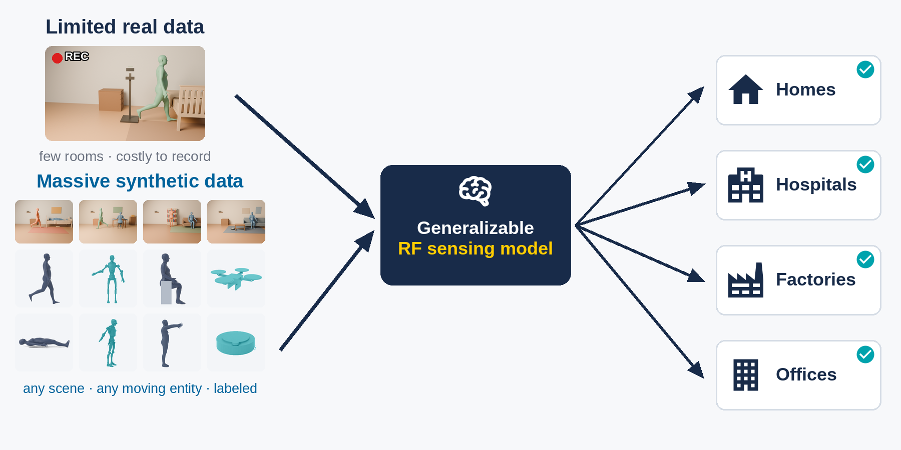

01 · Research · Amazon Lab126 collaboration
Physics-Based Radar Data Synthesis
Generate controllable human and animal motion, place it in sensor-agnostic RF scenes, and use RFDT—a physically based differentiable RF ray tracer—to produce labeled radar training data.
- Designed data across subjects, behaviors, and environments for activity recognition.
- Collected real human and pet activities including walking, sitting, lying down, falling, and jumping.
- Co-authored the forthcoming ACM MobiCom 2026 demo, Differentiable Radio Frequency Digital Twin.